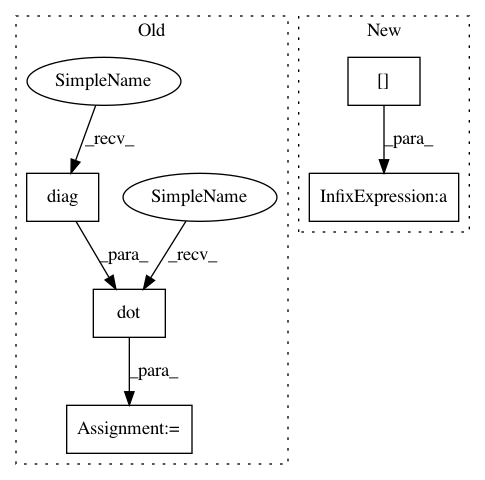

30eadc321c1755eca615a39bb4b8b5fc1e769f70,dipy/reconst/mdki.py,,_wls_fit_mdki,#,288
Before Change
Meeting of the ISMRM; Honolulu. April 22-28
// Define weights as diag(sqrt(ng) * msignal ** 2)
W = np.diag(ng * msignal ** 2)
// WLS solution
BTW = np.dot(design_matrix.T, W)
inv_BT_W_B = np.linalg.pinv(np.dot(BTW, design_matrix))
invBTWB_BTW = np.dot(inv_BT_W_B, BTW)
params = np.dot(invBTWB_BTW, np.log(msignal))
After Change
w = ng * msignal ** 2
// BTW = (Bw).T, where w are diag of W
BTW = (w[..., None] * design_matrix).T
inv_BT_W_B = np.linalg.pinv(np.einsum("...ij,jk->...ik", BTW,
design_matrix)) // dot product
invBTWB_BTW = np.einsum("...ij,...jk->...ik", inv_BT_W_B, BTW)
In pattern: SUPERPATTERN
Frequency: 3
Non-data size: 5
Instances
Project Name: nipy/dipy
Commit Name: 30eadc321c1755eca615a39bb4b8b5fc1e769f70
Time: 2019-03-10
Author: rafaelnh21@gmail.com
File Name: dipy/reconst/mdki.py
Class Name:
Method Name: _wls_fit_mdki
Project Name: librosa/librosa
Commit Name: 5797b341b65c0dbdc95208cd1ce962aa068bcc32
Time: 2013-03-23
Author: brm2132@columbia.edu
File Name: librosa/feature.py
Class Name:
Method Name: melfb
Project Name: pymanopt/pymanopt
Commit Name: 06f40aff5fafd3db599ae361d8d7aa33f3142038
Time: 2016-01-18
Author: jamiehntownsend@gmail.com
File Name: pymanopt/manifolds/grassmann.py
Class Name: Grassmann
Method Name: retr